User and Entity Behaviour Analytics pipeline built on the CERT r4.2 insider threat dataset. LSTM Autoencoder + Isolation Forest + 13 normalised signals, combined by a supervised meta-model ensemble.
Supervised Logistic Regression stacked on 13 normalised signals.
Trained on CERT r4.2 ground-truth labels (train-split users only).
| K | TP | FP | FN | Precision | Recall | F1 |
|---|---|---|---|---|---|---|
| 10 | 9 | 1 | 61 | 0.9000 | 0.1286 | 0.2250 |
| 20 | 19 | 1 | 51 | 0.9500 | 0.2714 | 0.4222 |
| 50 ★ | 38 | 12 | 32 | 0.7600 | 0.5429 | 0.6333 |
LSTM Autoencoder — score_p95, 90th pct threshold, K=50
Red = insider indicator (↑ score → more suspicious). Blue = protective signal.
| K | Flagged | LSTM pool | IF pool | Risk pool | TP | FP | FN | Precision | Recall | F1 |
|---|---|---|---|---|---|---|---|---|---|---|
| 10 | 0 | 10 | 10 | 10 | 0 | 0 | 70 | 0.0000 | 0.0000 | 0.0000 |
| 20 | 5 | 20 | 20 | 20 | 0 | 5 | 70 | 0.0000 | 0.0000 | 0.0000 |
| 50 | 22 | 50 | 50 | 50 | 7 | 15 | 63 | 0.3182 | 0.1000 | 0.1522 |
Note: The 3-way voting uses LSTM top-K, IF bottom-K (inverted), and Risk top-K. Low overlap between these three rankers reduces the voted set to near-zero at K=10/20. The supervised meta-model (Idea 13) significantly outperforms this unsupervised ensemble.
| Aggregation | Threshold | Pool | K | TP | FP | FN | Precision | Recall | F1 |
|---|---|---|---|---|---|---|---|---|---|
| score_max | 90% | 100 | 10 | 5 | 5 | 65 | 0.5000 | 0.0714 | 0.1250 |
| score_max | 90% | 100 | 20 | 7 | 13 | 63 | 0.3500 | 0.1000 | 0.1556 |
| score_max | 90% | 100 | 50 | 15 | 35 | 55 | 0.3000 | 0.2143 | 0.2500 ★ |
| score_p95 | 90% | 100 | 10 | 5 | 5 | 65 | 0.5000 | 0.0714 | 0.1250 |
| score_p95 | 90% | 100 | 20 | 5 | 15 | 65 | 0.2500 | 0.0714 | 0.1111 |
| score_p95 | 90% | 100 | 50 | 5 | 45 | 65 | 0.1000 | 0.0714 | 0.0833 |
| score_mean | 90% | 100 | 50 | 6 | 44 | 64 | 0.1200 | 0.0857 | 0.1000 |
| Aggregation | Threshold | Pool | K | TP | FP | FN | Precision | Recall | F1 |
|---|---|---|---|---|---|---|---|---|---|
| score_max | 90% | 263 | 50 | 14 | 36 | 56 | 0.2800 | 0.2000 | 0.2333 |
| score_mean | 90% | 100 | 50 | 7 | 43 | 63 | 0.1400 | 0.1000 | 0.1167 |
| score_p95 | 90% | 100 | 10 | 4 | 6 | 66 | 0.4000 | 0.0571 | 0.1000 |
| score_p95 | 90% | 100 | 20 | 9 | 11 | 61 | 0.4500 | 0.1286 | 0.2000 |
| score_p95 | 90% | 100 | 50 | 23 | 27 | 47 | 0.4600 | 0.3286 | 0.3833 ★ |
| Model | Aggregation | Best F1 | Precision | Recall | TP |
|---|---|---|---|---|---|
| LSTM Autoencoder ★ | score_p95 | 0.3833 | 0.4600 | 0.3286 | 23 |
| Isolation Forest | score_max | 0.2500 | 0.3000 | 0.2143 | 15 |
| LSTM Autoencoder | score_max | 0.2333 | 0.2800 | 0.2000 | 14 |
| LSTM Autoencoder | score_mean | 0.1167 | 0.1400 | 0.1000 | 7 |
| Isolation Forest | score_mean | 0.1111 | 0.2500 | 0.0714 | 5 |
| Isolation Forest | score_p95 | 0.1250 | 0.5000 | 0.0714 | 5 |
| K | LSTM pool | IF pool | Union | TP | FP | FN | Precision | Recall | F1 |
|---|---|---|---|---|---|---|---|---|---|
| 10 | 10 | 10 | 20 | 4 | 16 | 66 | 0.2000 | 0.0571 | 0.0889 |
| 20 | 20 | 20 | 40 | 9 | 31 | 61 | 0.2250 | 0.1286 | 0.1636 |
| 50 | 50 | 50 | 100 | 22 | 78 | 48 | 0.2200 | 0.3143 | 0.2588 |
Superseded by the supervised meta-model (Phase 4).
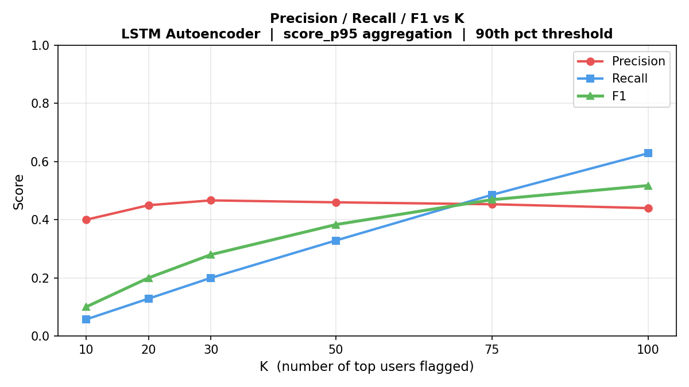
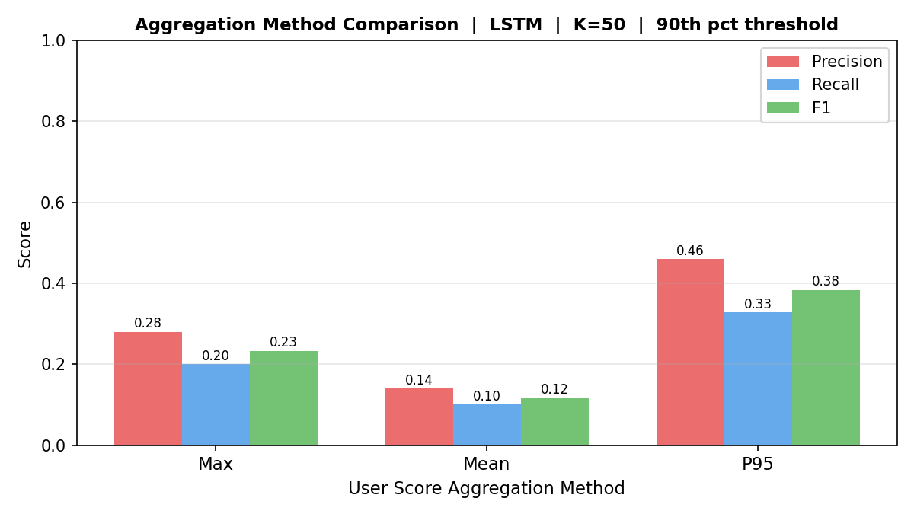
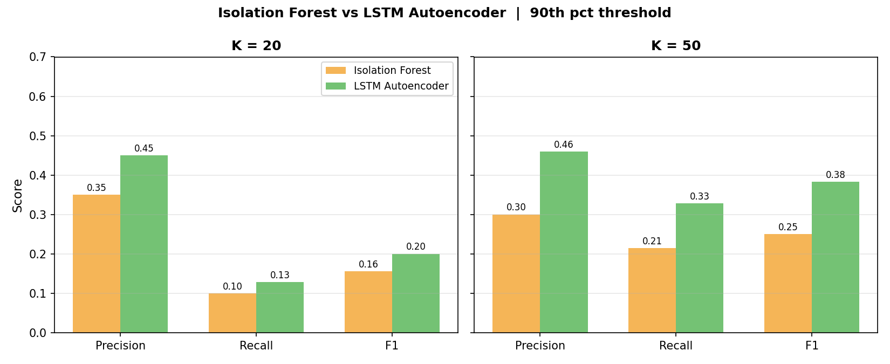
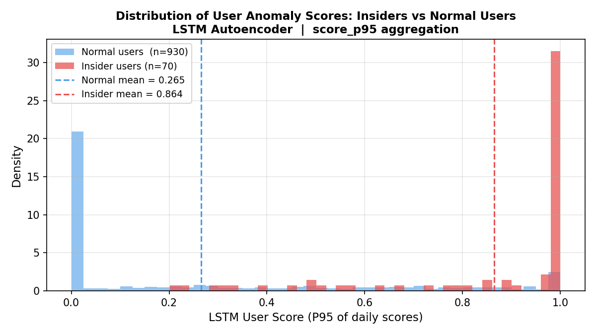
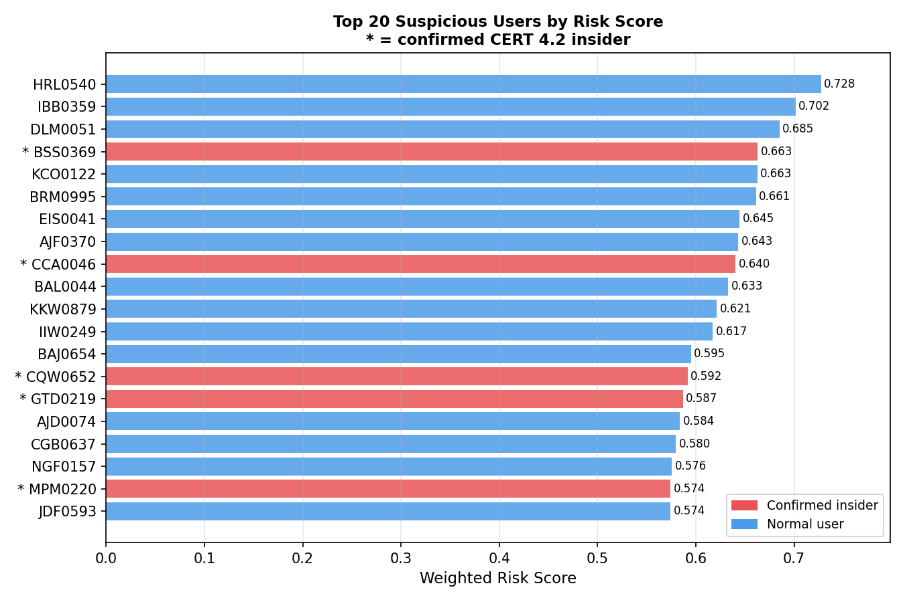
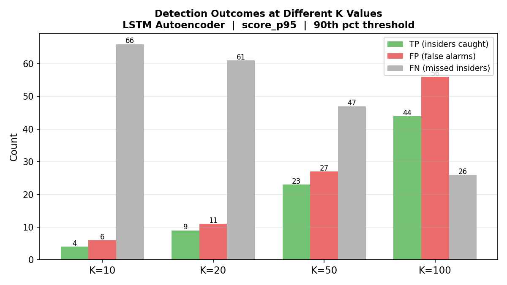
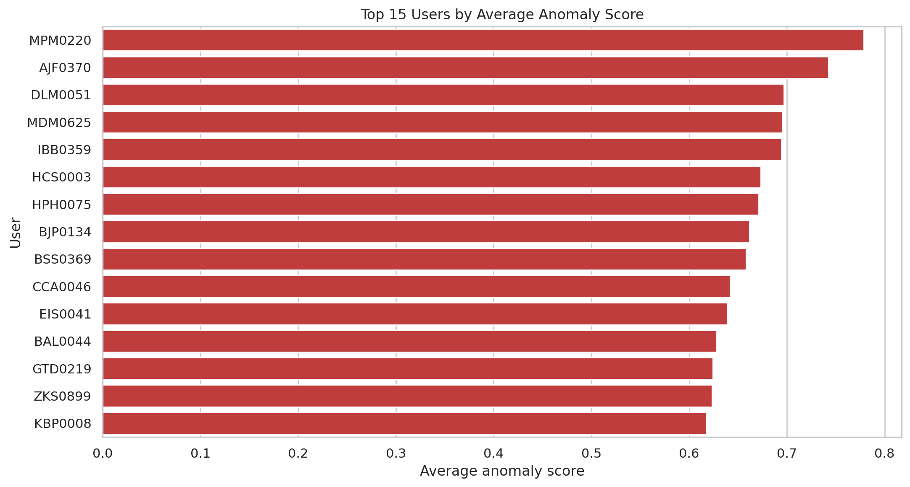
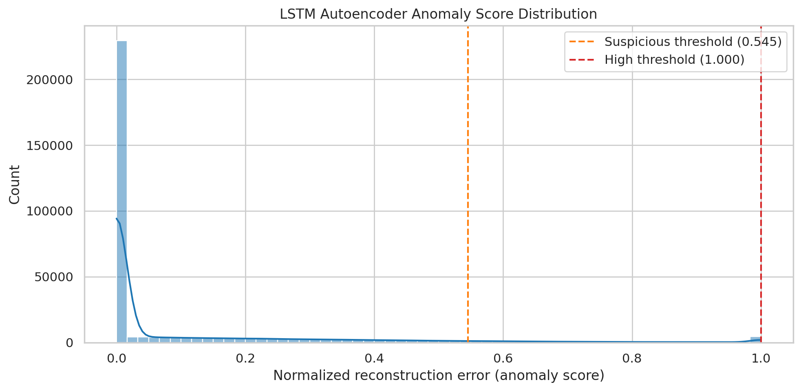
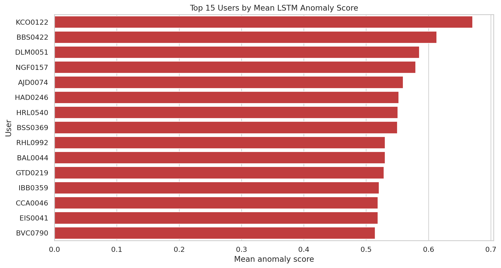
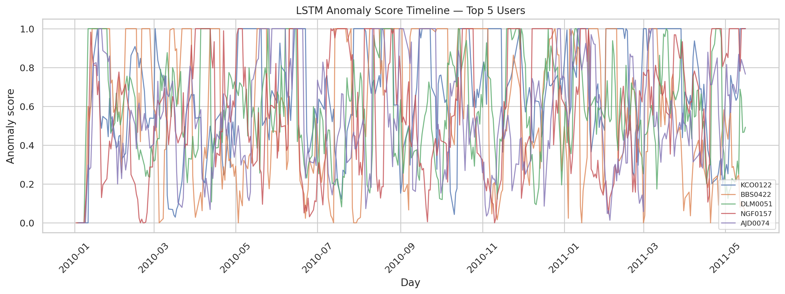
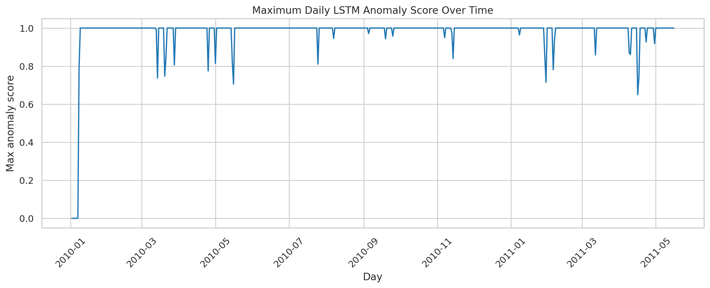
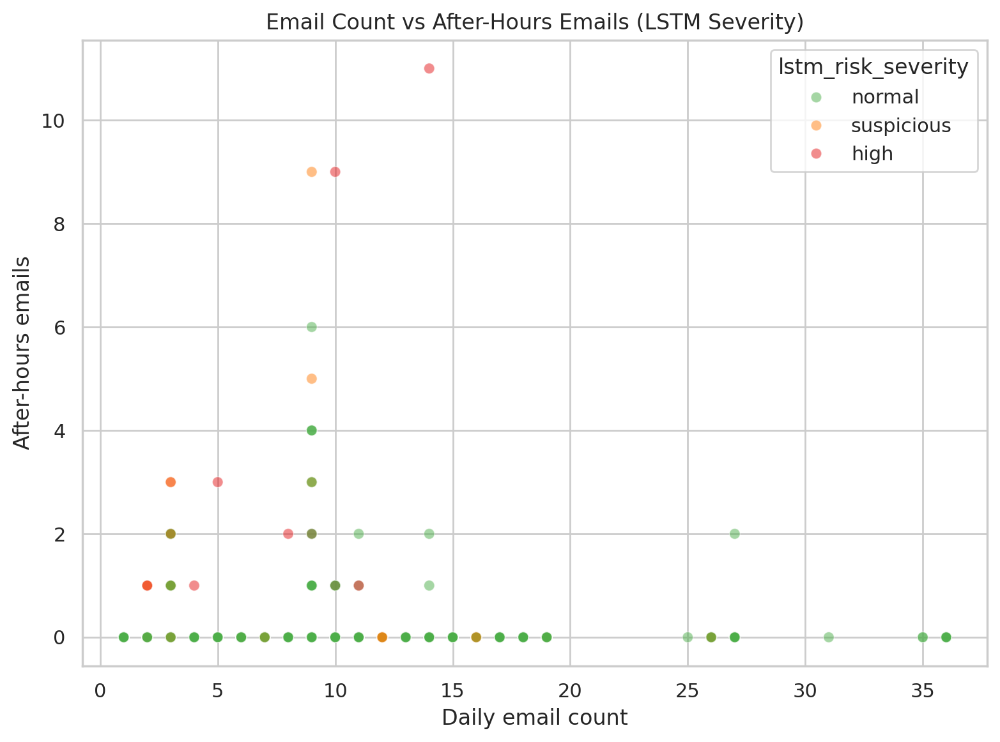
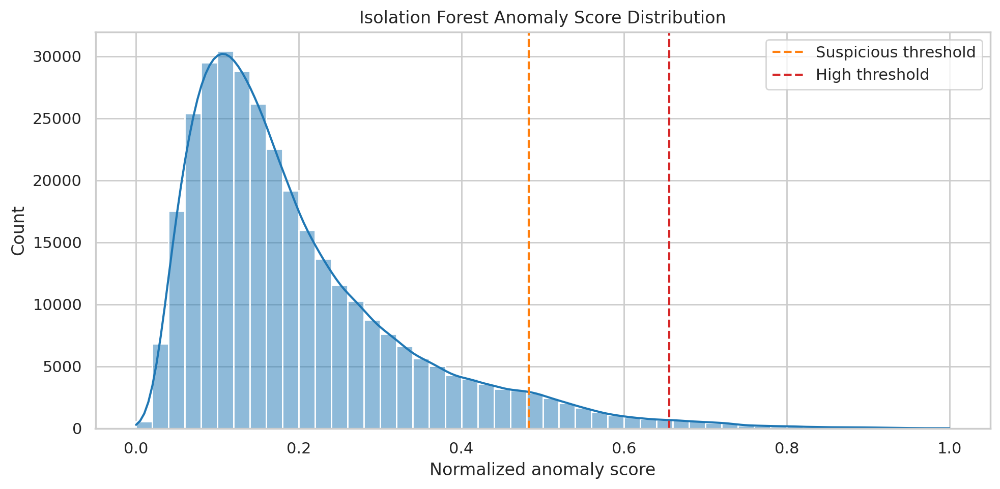
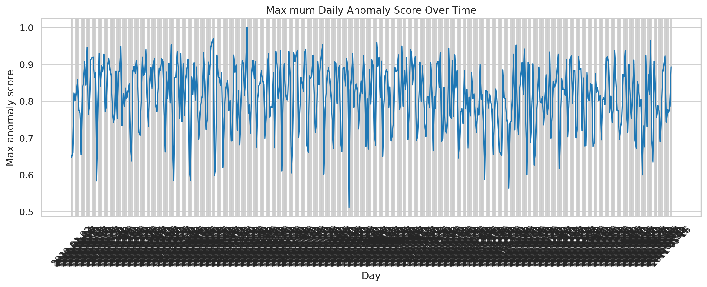
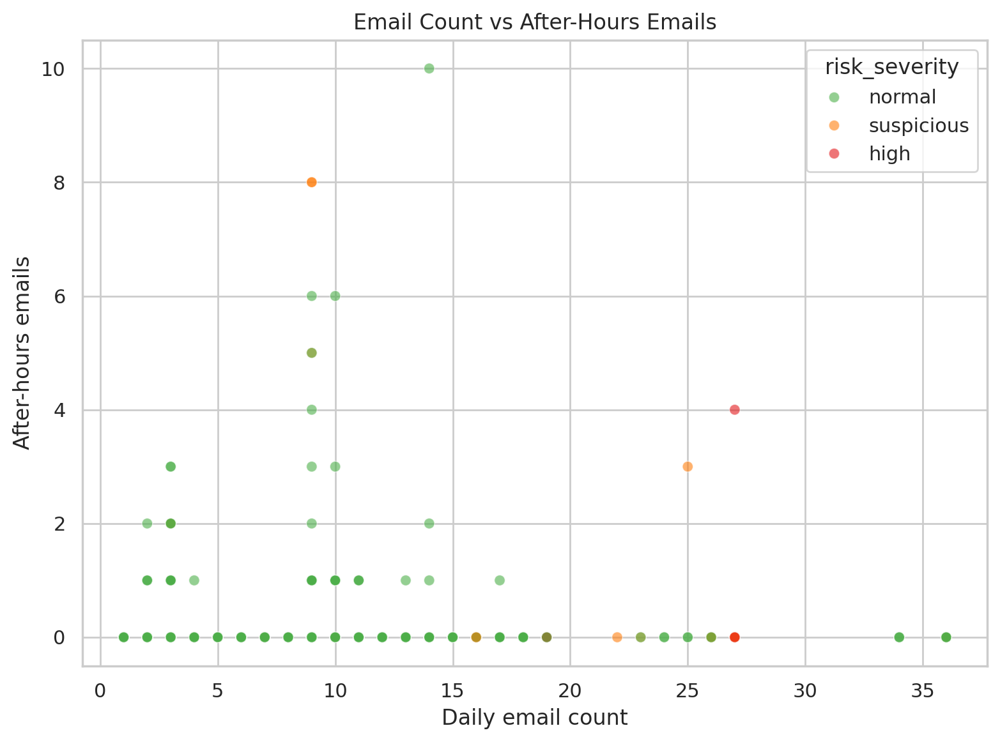
CERT r4.2 raw logs (email, logon, device, file) cleaned and merged into daily user-level features.
38 behavioral features including velocity deltas, cyclical time encoding (sin/cos hour/weekday),
and external recipient ratios. Train/val/test split by date.
Density-based anomaly scoring on all 38 features. Phase 2 added velocity/delta signals,
external recipient ratio, and cyclical time encoding. With Phase 2 features, IF scores insiders
directly (higher = more suspicious). iforest_score ∈ [0, 1]
Global model trained on all users' 7-day sliding windows. Per-user z-score normalisation
applied before global MinMaxScaler — each user's features measured against their own baseline.
Mean reconstruction MSE is the anomaly score. Latent distance from training centroid captures
gradual behavioural drift. score_p95 aggregation gives strongest signal.
Keyword/rule classifier scores email and file content as PUBLIC / INTERNAL / SENSITIVE / RESTRICTED.
Feeds into the risk score as content_sensitivity_norm.
LSTM P95, after-hours activity, BCC usage, file exfiltration, USB activity, multi-PC access, burst-day spikes, content sensitivity, flagged-day rate, latent distance, IF score — each scaled to [0, 1] and combined using domain-informed weights (optionally GA-optimised).
Regularised Logistic Regression (C=0.1, class_weight="balanced") trained on
all 13 normalised signals using CERT ground-truth labels (train-split only). 5-fold CV
ROC-AUC = 0.9671. Learns a data-driven signal combination that significantly
outperforms any standalone anomaly detector.
| Total users | 1,000 |
| Confirmed insiders | 70 |
| Insider prevalence | 7.0% |
| Email records | ~2.9M |
| Email file size | 1,299 MB |
| File access records | 445,581 |
| Logon records | 854,859 |
| Device records | 405,380 |
| Insider user-days | 1,892 |
| LSTM features | 38 |
| Risk signals (normalised) | 13 |
| LSTM window size | 7 days |
| CERT Release | Insiders | Matched |
|---|---|---|
| r4.2 ★ | 70 | 70 / 70 |
| r5.2 | 99 | 0 |
| r6.1 / r6.2 | 5 / 5 | 0 |
| r5.1 | 4 | 0 |
| r4.1 | 3 | 0 |
Auto-selected r4.2 (70/70 match). All scored users are r4.2 employees.
These metrics measure raw day-level detection by IF/LSTM thresholds — intermediate diagnostics only. Final user-level and meta-model results are shown in the Final Results tab.
| Metric | IF Day (test) | IF Day (all) | IF User | LSTM Day (test) | LSTM Day (all) | LSTM User |
|---|---|---|---|---|---|---|
| ROC-AUC | 0.7408 | 0.7369 | 0.8465 | 0.9309 | 0.9152 | 0.8913 |
| Avg Precision | 0.0472 | 0.0084 | 0.2532 | 0.2521 | 0.0785 | 0.2579 |
| Precision | 0.0417 | 0.0070 | 0.1791 | 0.2058 | 0.0477 | 0.1443 |
| Recall | 0.0939 | 0.0859 | 0.7571 | 0.6757 | 0.6355 | 1.0000 |
| F1 | 0.0577 | 0.0130 | 0.2896 | 0.3155 | 0.0887 | 0.2523 |
| TP | 104 | 115 | 53 | 748 | 851 | 70 |
| N insiders | 1107 | 1339 | 70 | 1107 | 1339 | 70 |
LSTM achieves the strongest day-level ROC-AUC (0.9309 test) — demonstrating that the LSTM autoencoder reconstruction error is a strong signal for insider anomaly days, even before user-level aggregation. Low precision at the day level is expected (rare event, dense non-insider days).
score_max rounds to 1.0 for virtually every user — no discriminative signal.
score_p95 (per-user 95th percentile of daily scores) gives the strongest insider/normal separation.
After Phase 2 feature engineering (velocity deltas, external recipients, cyclical time), Isolation Forest scores insiders directly higher — not inverted. Phase 2 features improved IF user-level ROC-AUC from ~0.75 to 0.8465.
LSTM latent distance from the training-period centroid captures gradual behavioural drift
that reconstruction error misses. Stored as latent_dist_p95,
contributed as a 13th signal to the meta-model feature matrix.